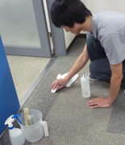

プロが伝授する耳よりアドバイス
プロが伝授する耳よりアドバイス
汚れは付着してもすぐに処理をすれば比較的簡単に取れるものです。
しかし、そのままの状態で放置すると汚れが繊維に定着し、除去することが困難になります。
ここではそんな汚れに対処するための、ご家庭でもできる対処法をご紹介いたします。
ちょっとしたシミは、歯ブラシなどに中性洗剤をつけてまわりに広がらないようにこすり、お湯で浸したタオルで汚れを叩くように拭き取ります。
ポイントは洗剤分を残さないようにすること。
洗剤分を残すと変色や脱色の原因となる恐れがあります。
食堂用の椅子など持ち運べるものは、たわしなどを用いて洗濯洗剤で丸洗いしてよくすすぎます。その後、逆さまにして陰干しで乾燥させます。
全体的な汚れには、洗剤水につけてよく絞ったタオルで拭き、その後、きれいな水でよく絞ったタオルを使い残った洗剤分を取り除きます。革椅子・ソファーなどは電話で相談してください。

カーペット汚れの80～90％は、乾いた汚れ（ドライソイル）と言われています。これは家庭用の掃除機で取り除くことができます。ただし、表面に汚れがなくてもカーペットの繊維のなかに汚れがたまっているので、毎日欠かさず掃除機をかけることが重要です。それにより、ある程度のアレルギーを防ぐこともできます。
もし表面に汚れがついてしまったら、椅子と同様の作業できれいにすることができ、快適な美観を維持できます。最近、通販などで売っている家庭用スチームクリーナーを使うと、寝ていたパイルが柔らかくよみがえり、ダニなどの駆除にもなります。